1. Antes de empezar
Este manual es para el administrador de una sucursal. Desde tu panel manejás todo lo que pasa en tu sede: los autos que entran y salen, las reservas, los empleados de tu sucursal, los números de plata y la configuración del sistema.
¿Qué puedo y qué no puedo hacer?
El sistema distingue tres tipos de cuenta. Todos entran al mismo panel, pero cada una ve solamente las pantallas que le corresponden:
Empleado
Solo monitoreo y reservas de su sucursal. No ve tareas administrativas ni números financieros.
Admin de Sucursal (vos)
Todo lo de tu sede: usuarios, finanzas, promociones, tickets y configuración. Es tu rol.
Admin General
Además administra la red completa de sucursales. No es tu rol.
Todo lo que ves y hacés en este manual afecta únicamente tu sucursal. La sección Sucursales del menú lateral no te aparece: dar de alta, editar o cerrar otras sedes es tarea del administrador general.
Cómo entrar al sistema
- Entrá a la página principal de AUTOPASS desde el navegador.
- Hacé clic en el botón INICIAR SESIÓN, en la parte superior derecha.
- Se abre una ventana con un formulario. Escribí tu correo electrónico y tu contraseña.
- Presioná Iniciar sesión. El sistema te lleva directo al panel.

Revisá que las mayúsculas y el teclado estén bien. Si el problema sigue, pedile al administrador general que te la restablezca. También podés usar el enlace de recuperación desde la misma ventana de acceso.
Las 8 pantallas de tu panel
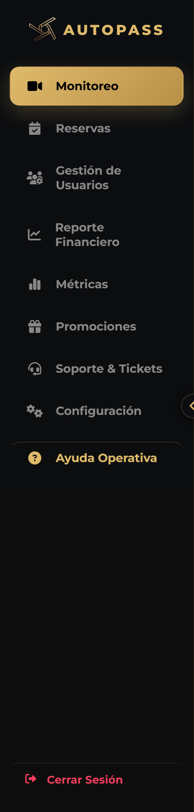
Junto a Reservas y Soporte vas a ver un pequeño
círculo con un número. Es un contador: te avisa cuántas reservas nuevas o tickets
pendientes hay. Cuando está en 0 no hay nada esperando tu respuesta.
2. Monitoreo en vivo
Esta es la pantalla que vas a usar todo el día. Te muestra, en tiempo real, qué está pasando en tu estacionamiento de estacionamiento.
Vehículos estacionados
Es la lista que ves por defecto en el monitoreo. Cada fila es un auto que está adentro ahora mismo, con su patente, el tiempo que lleva estacionado y el sector donde quedó.
- Entrá a Monitoreo en el menú lateral.
- En el panel VEHÍCULOS ESTACIONADOS vas a ver la lista de tu estacionamiento.
- Para encontrar un auto puntual, escribí su patente en el buscador.
- Usá las flechas de abajo para pasar de página si tenés muchos vehículos.
Qué podés hacer con cada vehículo
| Acción | Cuándo usarla |
|---|---|
| Pagar | El cliente quiere pagar la estadía antes de salir. Registrás el pago y se calcula el total. |
| Cancelar | Se registró un ingreso que no era real (por ejemplo, una placa mal leída) y hay que dar de baja la estadía. |
| Salida manual | El auto ya se fue pero el sensor no registró la salida. Lo liberás vos. |
Cancelar elimina la estadía del vehículo y libera el lugar. Confirmá con el cliente antes de hacerlo: no se puede deshacer.
Últimos movimientos
La segunda pestaña del monitoreo te muestra la bitácora: cada ingreso y cada salida que registró el sistema, con su hora y el origen de la lectura.
- Hacé clic en ÚLTIMOS MOVIMIENTOS, arriba de la lista.
- Revisá la columna de horas para ver la secuencia del día.
- Si necesitás el detalle de una lectura, hacé clic en la fila para abrirla.
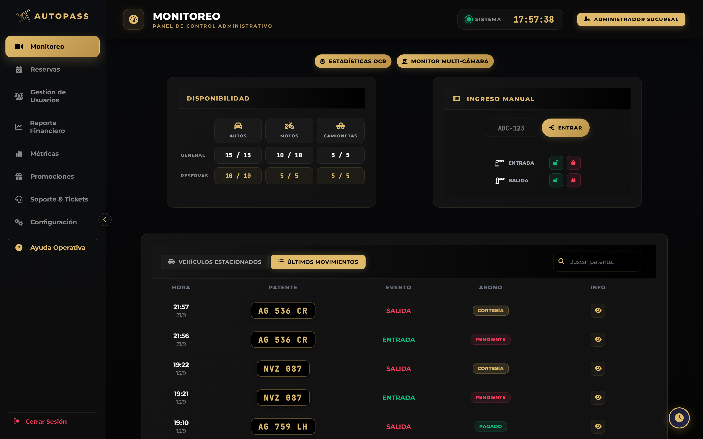
Ingreso manual de un vehículo
Cuando una cámara falla o un auto no es detectado por el lector, entrás el vehículo a mano.
- En el monitoreo, ubicá la sección de ingreso manual.
- Escribí la patente en el campo de texto.
- Elegí en el desplegable el piso o sector donde queda el auto.
- Presioná el botón de ingreso. El auto aparece en la lista de estacionados.
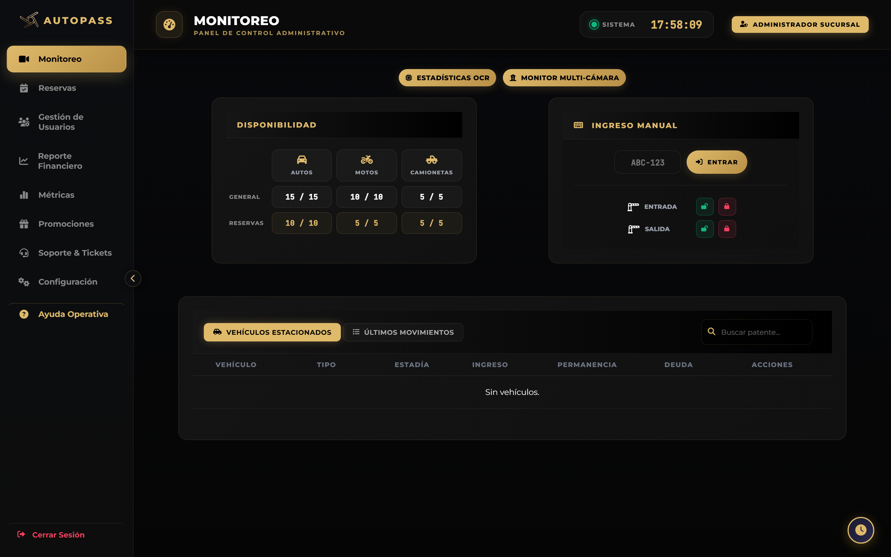
Si la patente no figura en el sistema, igual podés ingresarla manualmente, pero el
vehículo queda sin titular asociado. Para correcciones de lectura
automática (por ejemplo, una O leída como 0) usá la
herramienta de comparación de patentes del monitoreo.
Barreras
Desde el monitoreo también abrís y cerrás las barreras de entrada y de salida a mano. Útil cuando el sistema no puede decidir por vos.
| Botón | Efecto |
|---|---|
| ABRIR Entrada | Levanta la barrera de ingreso. |
| CERRAR Entrada | Baja la barrera de ingreso. |
| ABRIR Salida | Levanta la barrera de egreso. |
| CERRAR Salida | Baja la barrera de egreso. |
Abrir la barrera de salida sin cobrar deja salir el auto sin registrar el pago. Usala solo ante un caso justificado y anotá el motivo.
Las dos ventanas Monitoring y Estadísticas OCR
Arriba del monitoreo hay dos botones que te abren páginas aparte en otra pestaña:
- MONITOR MULTI-CÁMARA: la vista de todas las cámaras a la vez.
- ESTADÍSTICAS OCR: cuántas lecturas automáticas acertaron y cuántas fallaron.
3. Reservas
Una reserva es un lugar que un cliente ocupa por adelantado y paga por adelantado. Vos gestionás las reservas que se hacen en tu sucursal.
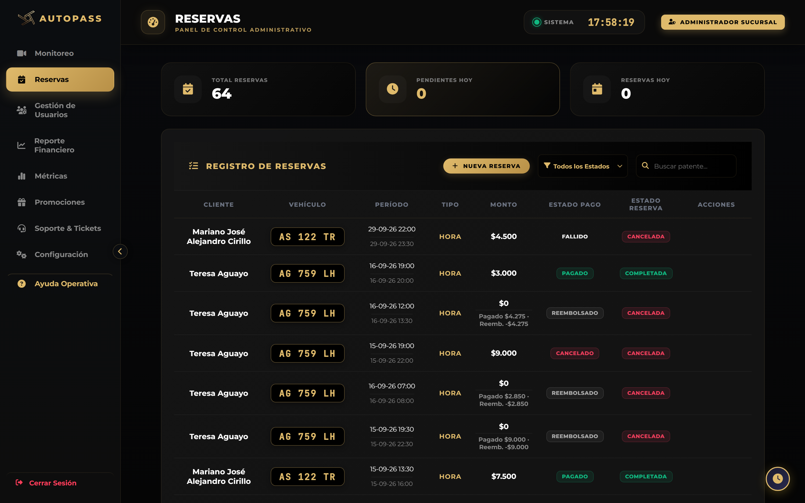
Ver y filtrar reservas
Arriba de la tabla hay tres indicadores: el total de reservas, las pendientes de hoy y las reservas de hoy. Debajo, dos filtros: uno por estado y otro buscador por patente o nombre del cliente.
Crear una reserva
Se usa cuando un cliente reserva en persona o por teléfono y todavía no quedó registrada.
- Entrá a Reservas.
- Hacé clic en NUEVA RESERVA, arriba a la derecha.
- Escribí la patente. El sistema busca el titular associated y completa los datos.
- Elegí el tipo de vehículo: auto, moto o camioneta. Cambia la tarifa aplicada.
- Elegí el tipo de estadía: por hora, día, semana, quincena, mes o estándar. Aparecen los campos de ese período.
- Elegí el horario de entrada y de salida. El sistema te dice si hay lugar disponible.
- Elegí el método de pago. El total se calcula solo.
- Si corresponde, aplicá descuentos o redenciones de puntos.
- Presioná Confirmar. La reserva queda registrada y el lugar queda bloqueado.
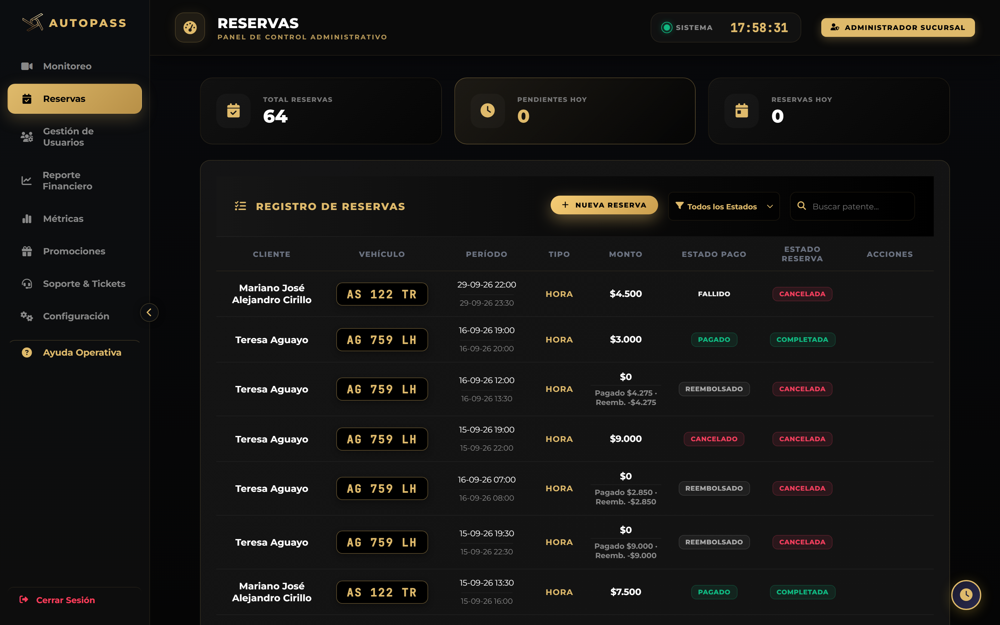
El sistema te avisa si no hay capacidad para ese horario. Si dice que no hay lugar, no insistas con otro horario: ofrecé al cliente otra opción antes de confirmar.
Editar, pagar y cancelar
| Acción | Qué hace |
|---|---|
| Ver detalle | Abre toda la información de la reserva. |
| Editar | Cambia horario o vehículo. Si el cambio altera el precio, te pide confirmar el ajuste. |
| Pagar | Registra el pago de una reserva que quedó pendiente. |
| Cancelar | Da de baja la reserva y libera el lugar. |
Cuando editás una reserva y el total cambia, aparece una ventana de confirmación con la diferencia. Si el cliente ya pagó de más, te pide elegir cómo se ajusta; si debe pagar, elegís el método de pago antes de confirmar.
4. Gestión de usuarios
Acá manejás las cuentas de tu sucursal: los empleados que trabajan con vos y los clientes que usan el sistema.
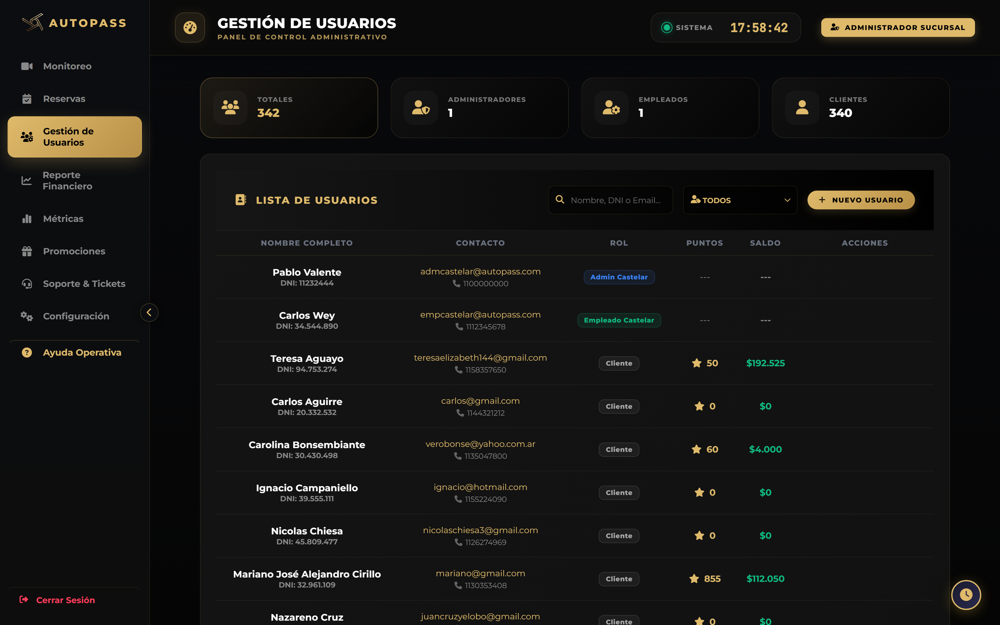
Crear un usuario
- Entrá a Gestión de Usuarios.
- Hacé clic en NUEVO USUARIO.
- Completá nombre, apellido, correo, DNI y rol.
- Definí una contraseña temporal y entregala al usuario.
- Si el rol es empleado o admin de sucursal, elegí la sucursal a la que queda asignado.
- Guardá.
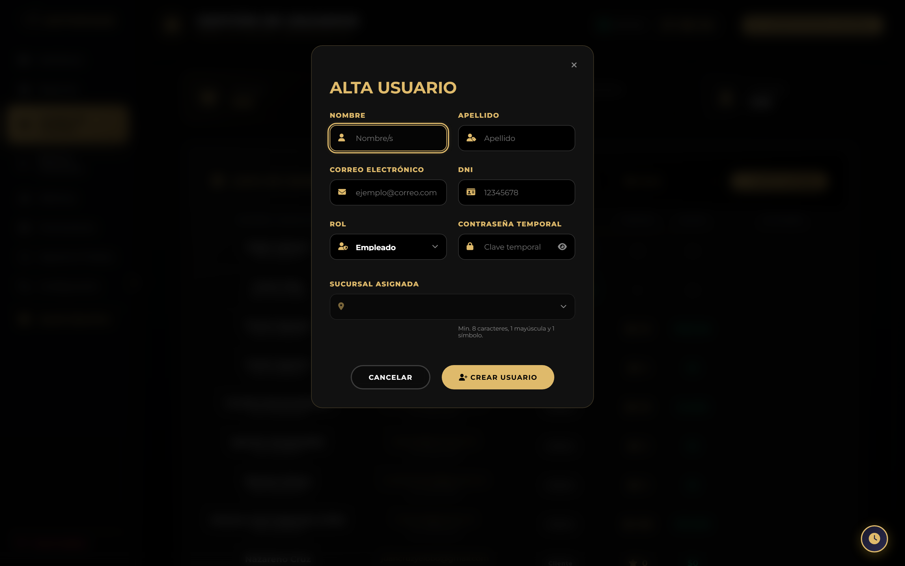
El rol define qué ve la persona. Un empleado solo entra a monitoreo y reservas; un admin de sucursal ve además finanzas y configuración. Antes de darle un rol nuevo, confirmá que esa persona lo necesita.
Acciones sobre un usuario
| Acción | Para qué sirve |
|---|---|
| Editar | Corregir nombre, correo, DNI o cambiar el rol. |
| Cambiar contraseña | Restablecer el acceso de una persona. |
| Bloquear / Desbloquear | Impedir o recuperar el acceso, sin borrar la cuenta ni su historial. |
Si alguien se va de la sucursal, bloqueá la cuenta en vez de eliminarla. Así conserva el historial de movimientos y las estadías que ya registraba.
5. Reporte financiero
Todos los números de plata de tu sucursal: cuánto facturas, cómo se desglosa y cómo viene la evolution respecto del período anterior.
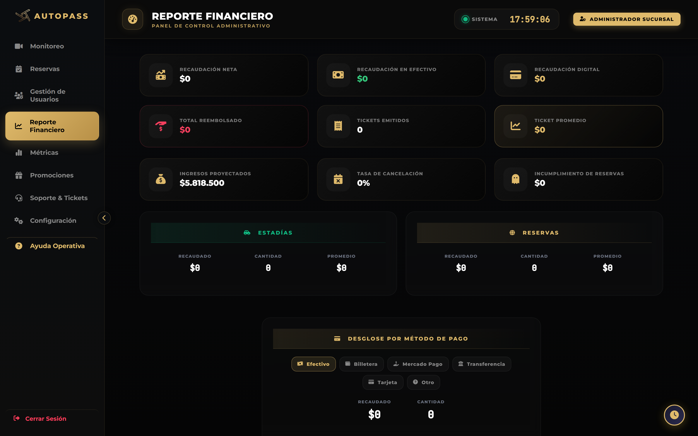
Los indicadores principales
| Indicador | Qué te dice |
|---|---|
| Recaudación neta | Total facturado, después de descontar reembolsos. |
| Efectivo / Digital | Cómo se repartió la cobranza entre los dos grandes canales. |
| Total reembolsado | Plata que se devolvió. Si es alto y sostenido, conviene revisarlo. |
| Tickets emitidos | Cantidad total de cobros registrados. |
| Ticket promedio | Cuánto se facturó en promedio por vehículo. |
| Ingresos proyectados | Estimación de cierre si sigue el ritmo actual. |
| Tasa de cancelación | Reservas que se cancelaron sobre el total. |
| No-shows | Reservas pagadas donde el cliente nunca llevó el auto. |
Los indicadores se pueden plegar y desplegar para ver el detalle de cada cálculo.
Analizar el gráfico de tendencia
El gráfico de ingresos por período es la herramienta para entender la evolución de tu sucursal. Podés filtrar por:
- Método de pago (efectivo, digital, MercadoPago, transferencia, tarjeta).
- Tipo de vehículo (auto, moto, camioneta).
- Período: hoy, una fecha puntual, la semana, el mes o el año.
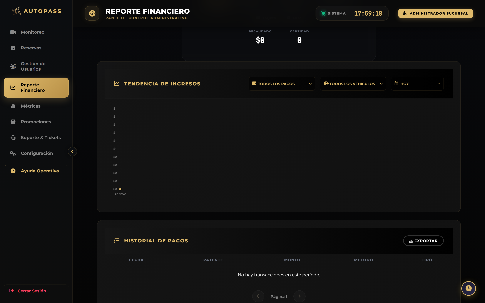
Consultar el historial y exportarlo
Abajo del gráfico está la tabla con cada pago: fecha, patente, monto, método y tipo de operación. Usá el buscador y la paginación para llegar al que necesitás. El botón de exportar descarga los datos de la consulta actual.
6. Métricas
Métricas reúne varios informes del sistema, todos acotados a tu sucursal. Además del flujo de vehículos, incluye el informe Recaudación, con los ingresos, el ticket promedio y los métodos de pago de tu sede.
Qué incluye
- Actividad de accesos. Entradas y salidas por hora, con el total de movimientos.
- Mapa de calor de tráfico. Días del mes por hora de apertura para ver los picos de movimiento.
- Ocupación y reservas. Uso de las plazas de reserva por hora y conversión de reservas.
- Recaudación. Ingresos, ticket promedio y desglose por método de pago de tu sucursal.
- Tiempos OCR & ALPR. Latencia del reconocimiento de patentes: promedio, mínimo, máximo y percentil 90.
Actividad de accesos
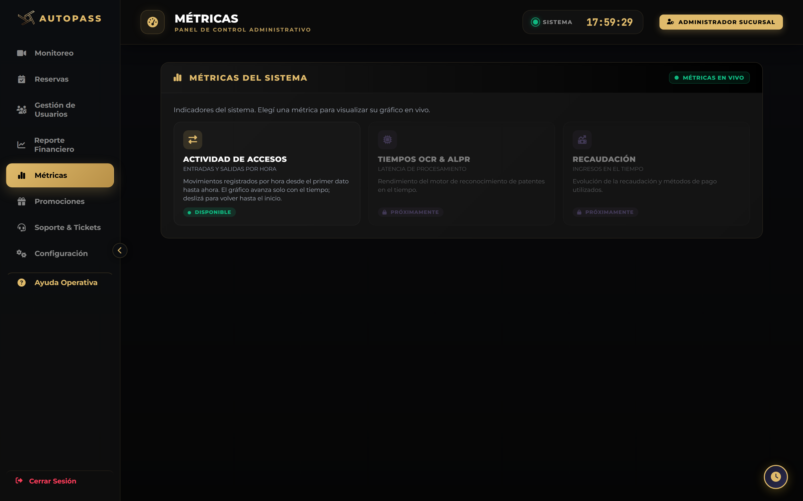
La primera tarjeta te da las cuatro cifras de contexto: desde cuándo hay datos, cuántos movimientos hubo en la última hora, cuántas entradas y cuántas salidas. Debajo, el gráfico de barras compara entradas contra salidas hora por hora.
Mirar el pasado o el presente
Por defecto las métricas están en modo en vivo: se actualizan solas. Para estudiar un momento anterior, apagá ese modo y usá estos controles:
- Rango de fechas: definí el intervalo y aplicá.
- Ventana: 6, 12, 24 o 48 horas, 7 días, o toda la historia.
- INICIO / FINAL: recorré la línea de tiempo paso a paso.
En modo en vivo el gráfico avanza solo, como un monitor. Con los filtros de fechas activados, en cambio, navegás un período histórico ya cerrado y los datos quedan fijos.
7. Promociones
Las promociones son beneficios que los clientes canjean con los puntos que acumularon por estacionarse. Vos creás y activás las de tu sucursal.
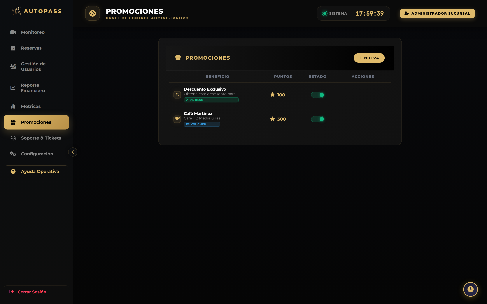
Crear una promoción
- Entrá a Promociones.
- Hacé clic en NUEVA, arriba a la derecha.
- Escribí el título del beneficio, por ejemplo "Descuento 20% en estadías diarias".
- Redactá la descripción con las condiciones.
- Definí cuántos puntos cuesta canjearla.
- Elegí el tipo de canje y, si corresponde, el valor del descuento.
- Elegí el ícono que representa el beneficio.
- Indicá a qué sucursal aplica.
- Guardá.
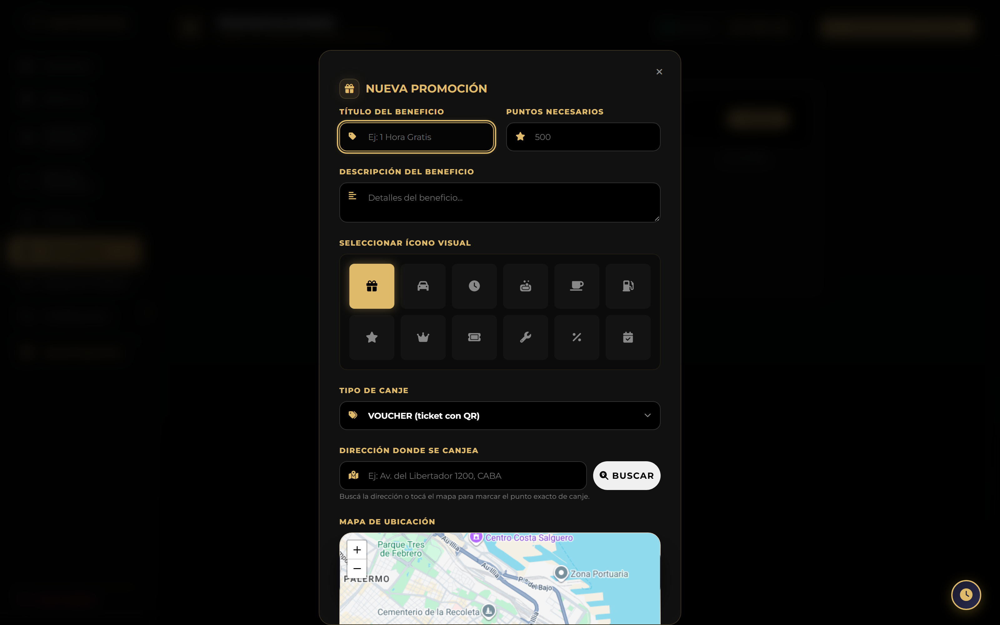
Acciones sobre una promoción
| Acción | Para qué sirve |
|---|---|
| Editar | Modificar el texto o el valor del beneficio. |
| Activar / Desactivar | Dejarla disponible para canje o sacarla de circulación sin borrarla. |
| Eliminar | Borrarla definitivamente. Preferí desactivar si puede volver a usarse. |
8. Soporte y tickets
Cuando un cliente tiene una consulta o un reclamo, deja un ticket desde la web. Tu trabajo es responderlos y cerrar el circuito.
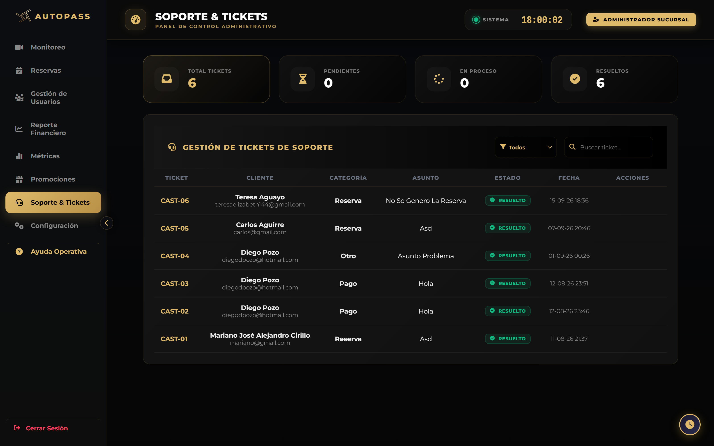
Los cuatro estados
| Estado | Significado |
|---|---|
| Pendiente | Consulta nueva, sin responder. |
| En proceso | Ya la respondiste o estás trabajando en el caso. |
| Resuelto | Cerrado. La conversación queda bloqueada. |
Responder un ticket
- Entrá a Soporte y Tickets. Fijate en el contador de pendientes.
- Usá el filtro por estado para ver solo los Pendientes.
- Hacé clic en Atender en la fila que quieras resolver.
- Se abre la conversación con el historial y los datos del cliente.
- Escribí tu respuesta en el cuadro de texto.
- Elegí el estado que corresponde: En proceso si todavía falta algo, Resuelto si ya está.
- Enviá.
Cuando lo marcás como Resuelto, la respuesta queda en solo lectura. Si te equivocaste en el estado, pedile al administrador general que lo revierta.
9. Configuración
Esta pantalla es solo tuya. Ajuste cuatro cosas de tu sucursal: cuánto se cobra, cuántos lugares hay, qué cámaras funcionan y cómo está el sistema.
| Subsección | Para qué sirve |
|---|---|
| Tarifario | Los precios de todos los tipos de vehículo. |
| Plazas | Los pisos o niveles y su capacidad. |
| Monitoreo | Las cámaras de tu sucursal. |
| Sistema | Diagnóstico: base de datos, servidor, barreras y lectores. |
Tarifario
Los precios se editan por tipo de vehículo. Elegí Autos, Motos o Camionetas con los botones de arriba, y después tocá Editar para habilitar los campos.
| Concepto | Qué es |
|---|---|
| Fracción 30 min | El precio de la media hora. Se cobra en los primeros 30 min y en los tramos de 30 min que alternan con la hora. |
| Valor hora | El precio de la primera hora completa. La estadía arranca con la fracción, salta a la hora y después alterna: 30 min, 1 hora, 30 min… |
| Estadía diaria | Tarifa por día. |
| Abono semanal | Tarifa por semana. |
| Abono mensual | Tarifa por mes. |
El sistema cobra por bloques de media hora, pero combinando las dos tarifas: arranca con la Fracción 30 min, a los 30 min salta al Valor hora y después alterna media hora, una hora, media hora… Por ejemplo, con fracción de $500 y hora de $1.300, una estadía de 1 h 30 min cuesta $1.800. Los períodos largos (día, semana, quincena, mes) no usan esta regla.
- Entrá a Configuración.
- Elegí la subsección TARIFARIO.
- Elegí el tipo de vehículo a modificar.
- Tocá Editar: los campos se vuelven editables.
- Cargá los valores nuevos.
- Presioná Guardar. Los cambios rigen desde el momento en que los guardás.
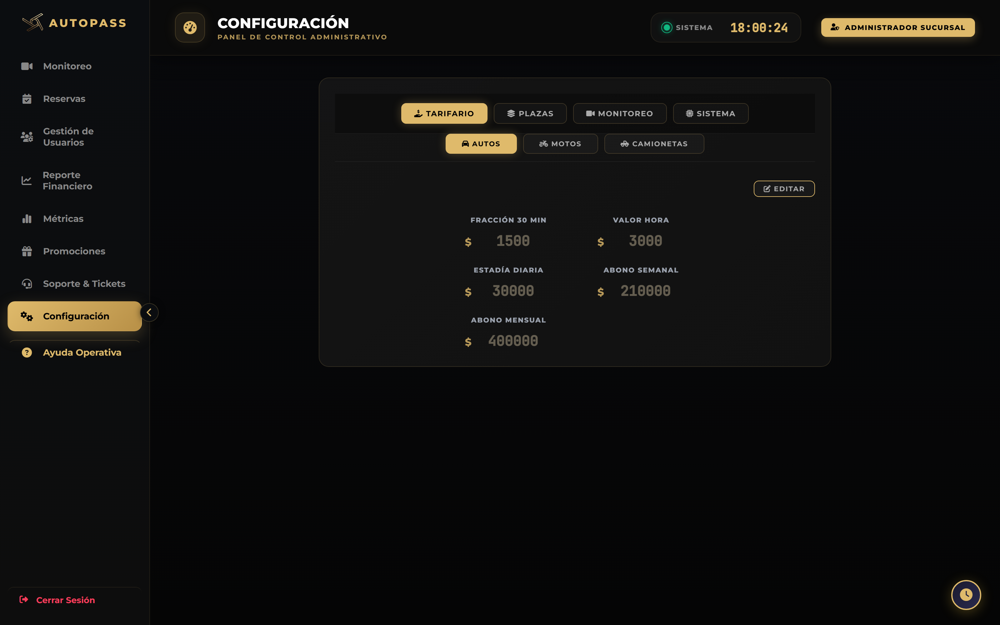
Los precios se aplican a las estadías que se calculen después del cambio. Las que ya estaban cerradas mantienen su valor original.
Plazas
Acá se ve tu estacionamiento como un plano de pisos o niveles. Cada nivel tiene una capacidad medida en lugares, separada por tipo de vehículo y también los reservados.
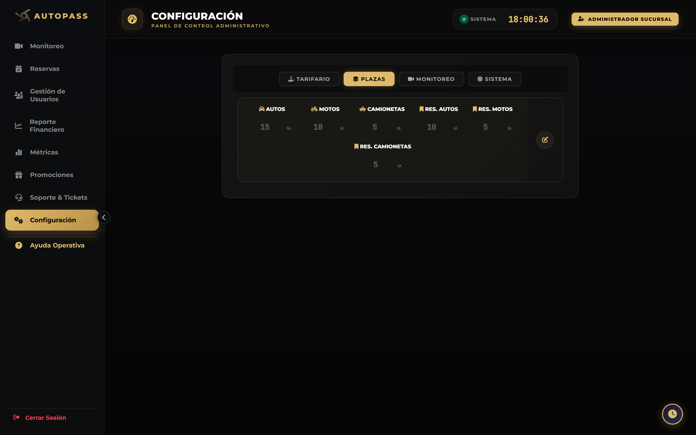
Crear o editar un nivel
- Entrá a Configuración → PLAZAS.
- Elegí crear un nivel nuevo o tocá uno existente para editarlo.
- Escribí el nombre del nivel, por ejemplo "Piso 1" o "Subsuelo B".
- Cargá las capacidades de autos, motos y camionetas.
- Cargá, si aplica, las capacidades reservadas de cada tipo.
- Presioná CREAR NIVEL o guardá los cambios.
La suma de los niveles es lo que el sistema usa como aforo total de tu sucursal. Si los números no cierran con la realidad física del lugar, ajustá las capacidades.
Monitoreo (cámaras)
Administrás las cámaras que leen las patentes de tu sucursal.
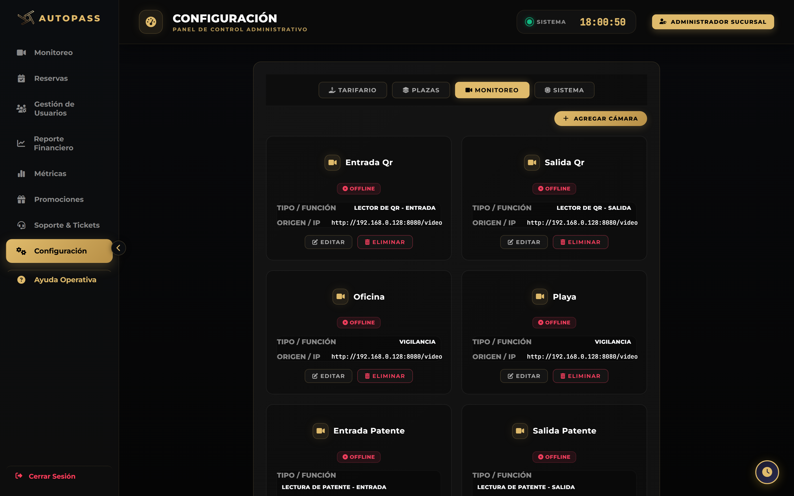
Agregar una cámara
- Entrá a Configuración → MONITOREO.
- Hacé clic en el botón para agregar cámara.
- Escribí el nombre de la cámara.
- Elegí la categoría o tipo (por ejemplo, entrada o salida).
- Cargá la dirección IP o origen del video.
- Elegí la sucursal o sede.
- Presioná GUARDAR (si es una cámara nueva) o ACTUALIZAR (si la estás editando).
Desde el listado podés editar o eliminar cámaras existentes, y activar o desactivar el servicio de monitoreo.
Sistema (diagnóstico)
La última subsección no tiene nada que configurar: es un tablero de estado que te dice si las cuatro cosas críticas de tu sucursal están funcionando.
| Indicador | Qué significa |
|---|---|
| Base de datos | Si el sistema puede guardar información. |
| Servidor | Si la API que responde al panel está en línea. |
| Barreras | El estado de la barrera de entrada y la de salida. |
| Lectores de patente | El estado de los lectores de entrada y salida. |
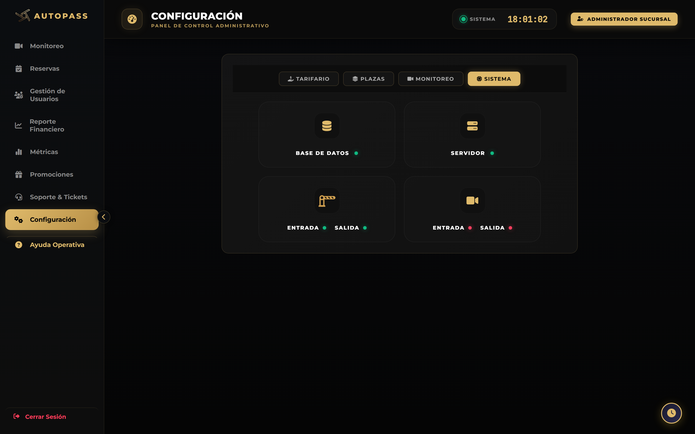
No pruebes tocar la configuración para "arreglarlo". Anotá qué indicador falló y avisale al administrador general o al soporte técnico: puede ser un problema de conexión que excede tu sucursal.
10. Ayuda operativa
El propio panel tiene una ayuda incorporated, con recorridos guiados y preguntas frecuentes. Es el primer lugar donde mirar si algo no está claro.
- Hacé clic en Ayuda Operativa, al final del menú lateral.
- Elegí el recorrido que te interesa: hay uno por pantalla y un recorrido completo.
- Usá el buscador para buscar una duda puntual.
- Cerrá la ventana con la X cuando termines.
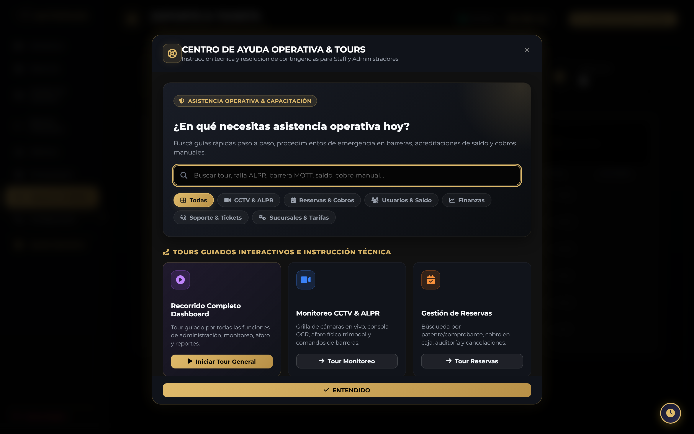
Los recorridos guiados son la forma más rápida de aprender a usar una pantalla nueva. Hacé el recorrido completo una vez, al principio.
11. Problemas frecuentes
No me aparece una sección del menú
Depende del rol de tu cuenta. Si sos administrador de sucursal y no te aparece Sucursales, es lo normal: esa sección es solo del administrador general. Si te falta algo que sí te corresponde, cerrá sesión y volvé a entrar.
Un auto figura estacionado pero ya se fue
El lector no registró la salida. Buscalo en VEHÍCULOS ESTACIONADOS y usá Salida manual. Revisá después el estado del lector de salida en Configuración → Sistema.
El auto entró pero no figura en la lista
La cámara no leyó la placa. Usá el ingreso manual del monitoreo. Si el error se repite con la misma patente, revisá el lector de entrada.
Una reserva no aparece en la lista
Filtrá por estado y buscá por patente. Si el cliente la hizo para otra sucursal, no la vas a ver: las reservas se muestran por sede.
No puedo editar un ticket
Está en estado Resuelto, y en ese estado la conversación queda bloqueada. Pedile al administrador general que lo reabra.
Los gráficos se ven vacíos
Probablemente estés mirando un período sin movimiento. Revisá el filtro de fechas: si quedó en una ventana vacía, volvé a en vivo o elegí el día de hoy.
La aplicación se ve desactualizada
Recargá la página completa con F5. Si el problema sigue, probá con una
ventana de incógnito: a veces queda una sesión vieja cacheada en el navegador.